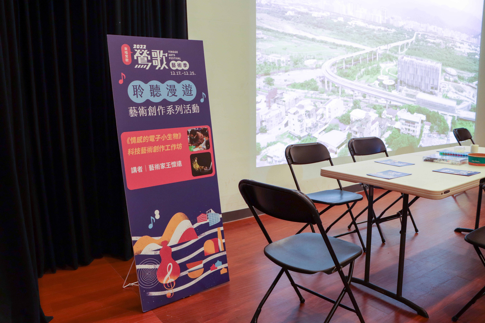
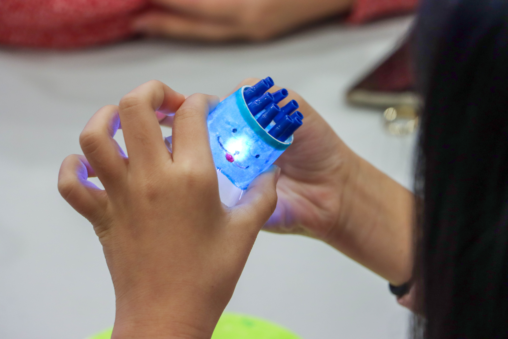
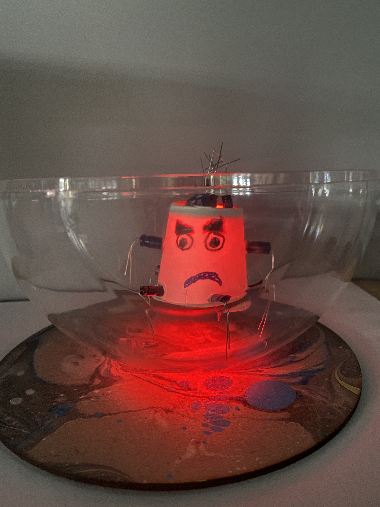
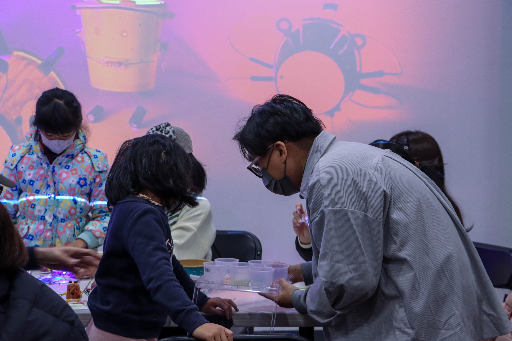

【記者許巧昕綜合報導】小朋友認真挑選一個個零件，黏貼在紙杯上，並畫上笑臉，最後點上自己喜愛的小燈光。2022鶯歌藝術季的系列活動之一，《情感的電子小生物》科技藝術創作工作坊於18日舉行，邀請藝術家王懷遠，帶領小朋友運用電子元件製作屬於自己的作品。希望參與者能透過藝術創作，表達自己的情緒。

《情感的電子小生物》科技藝術創作工作坊，為2022鶯歌藝術季《聆聽漫遊：藝術創作系列活動》中一項活動，邀請參與新北市立美術館「藝術STEAM計畫」的藝術家王懷遠來帶領民眾創作。 圖／許巧昕攝
王懷遠在創作中選用電子元件作為媒材的靈感，是源於曾看見軍人因掃雷機器人被地雷炸壞感到殘忍，而發覺本來設計為理性解決問題的機器，其實也能讓人類的情感被觸發。活動最初，王懷遠先介紹數幅與情緒相關的名畫，讓小朋友從畫作中的色彩與形狀，猜測不同藝術家所要傳達的情緒，藉以開啟小朋友對心情的想像。而在手作環節，小朋友運用電阻、電容等簡單的電子元件，去創作屬於自己的情感小生物，並搭配不同顏色的燈光，表示不同的情緒。

「請小朋友閉上眼睛，想像你在一個小房間，房間裡面有一隻小生物，它是什麼樣子、是什麼形狀、是什麼顏色？」王懷遠利用一連串的問答，讓小朋友透過片刻的寧靜，去審視自己此刻的情緒與想法，並創作自己的小生物。 圖／許巧昕攝
關於創作心得，參與者彭妹妹（化名）分享，自己製作的是一隻正在跳舞的藍色小生物，周圍配上草地環境，想傳達出上完課後高興的心情。王懷遠也曾在國小與老師張琬湄合作教導此課程，他們均回憶到，曾有位學生創作時，將原先要罩住小生物的壓克力罩倒過來放，並搭配紅色的LED燈，呈現他上課被老師罵、很憤怒的感覺。該名學生事後表示，自己在創作的過程中很開心，這令王懷遠和張琬湄感到欣慰，學生不僅打破預想的作品形式，也願意將情緒在創作中宣洩出來。家長蔣小姐（化名）也肯定此課程，認為小朋友透過動手做，可以聆聽自己真正的想法，也能在過程中，發掘自己喜歡、想要追求的事物是什麼。

先前王懷遠和張琬湄，在新北市立民安國小教授課程時，一名學生打破老師原先預想的作品形式，表達自己真實的情緒。 圖／張琬湄提供
推動此教案的過程中，王懷遠和張琬湄也面臨許多問題。由於課程涉及電子零件的運用，王懷遠怕講解太多深奧的電路知識，會讓學生感到困惑。他解釋：「因為這是一堂藝術課，希望將教案聚焦在作品的發想與創作。」此外，由於每位學生對色彩感受不同，容易造成意見上的分歧而產生爭論，例如有些學生覺得紅色代表生氣，有些學生反而認為紅色是呈現開心的氛圍。這時，王懷遠認為尊重每一位學生的想法很重要，他希望自己的角色是引導學生進行創作，讓學生可以從自己的心中，去找到自我表達的方法，而非給予學生各種顏色的定義。

在藝術教學上，王懷遠希望自己的角色是作為創作的引導者。他說：「我希望老師是消失的，老師是要能刺激學生為主，讓學生興奮起來」。 圖／許巧昕攝
「適當的情緒表達，可以協助人們排解自身的壓力與焦慮，也可以增進情感交流與人際關係」在臺大醫院兒童醫院任職的藝術治療師方美祈說明，他經常透過像是繪畫等不同藝術媒介，進行治療與諮商工作，協助病童處理內心情緒。他補充，人的心情有時很複雜，難以用言語表達，但透過藝術治療與創作，可以從過程中發掘人們隱藏的情緒，形成另一種表達方式讓治療師做更深入的溝通，他說：「藝術治療是用人類本能的方式去呈現情緒，用非語言的方式表現自我狀態。」